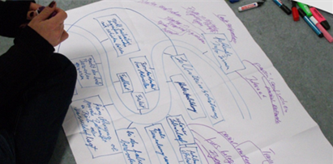

Berufliche Rehabilitation
Unsere Maßnahme zur beruflichen Rehabilitation unterstützt Menschen dabei, ihren Weg in Arbeit zu finden – oder nach einer Unterbrechung erfolgreich zurückzukehren.
Unser Angebot richtet sich an Jugendliche und junge Erwachsene mit Förderbedarf ebenso wie an Erwachsene, die sich nach einer Krankheit, einem Unfall oder einer schwierigen Lebensphase beruflich neu orientieren möchten. Unser Ziel ist, dabei zu unterstützen, eine realistische berufliche Perspektive zu entwickeln und langfristig im Arbeitsleben Fuß zu fassen.
Jeder Mensch bringt unterschiedliche Stärken, Interessen und Erfahrungen mit. Deshalb entwickeln wir gemeinsam mit Ihnen Lösungen, die wirklich zu Ihnen passen.
Unsere Angebote:
Berufsorientierung und Diagnostik
Sie lernen Ihre Stärken und Interessen besser kennen – als Grundlage für Ihre berufliche Entscheidung.
Berufsvorbereitende Maßnahmen
Wir bereiten Sie gezielt auf Ausbildung oder Arbeit vor und stärken Ihre fachlichen und persönlichen Kompetenzen.
Reha-Ausbildung
Sie können einen anerkannten Berufsabschluss erwerben – praxisnah und mit individueller Unterstützung.
Umschulung und Weiterbildung
Wir eröffnen Ihnen neue berufliche Perspektiven und helfen Ihnen, sich an die Anforderungen des Arbeitsmarktes anzupassen.
Die Angebote orientieren sich eng an den Anforderungen des Arbeitsmarktes. Praktische Erfahrungen sind ein wichtiger Bestandteil.
Ihr Weg mit uns: Der Einstieg erfolgt in der Regel über einen zuständigen Leistungsträger, zum Beispiel die Agentur für Arbeit oder die Rentenversicherung.
Wir beraten Sie gerne zu Ihren Möglichkeiten und begleiten Sie Schritt für Schritt auf Ihrem Weg in ein selbstbestimmtes Berufsleben.